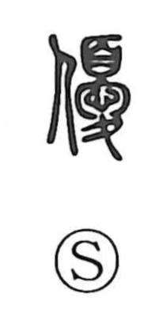

優

Uncategorized
Kun: yasashii, sugureru, masaru | On: yuu
gentle ・ kind ・ excellent ・ superior ・ to excel ・ actor
Explanation
A phono-semantic character, 優 takes 憂 as its phonetic, giving the on-reading yuu. In form, 憂 depicts a mourner standing still with a mourning headpiece, absorbed in grief. 優 builds on that image, showing a person who imitates the mourner’s bearing and gestures—a ritual substitute who expressed lament before the gods on behalf of the bereaved at a funeral. From this role of performer arose the sense of an actor, seen in 俳優, with 俳 picturing two performers in line. The composed, tender demeanor of the ritual mourner then broadened into everyday meanings such as gentle and kind, and by extension into senses of surpassing and excelling, even connoting superior or outstanding quality.